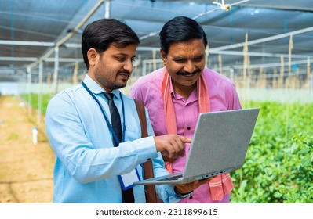
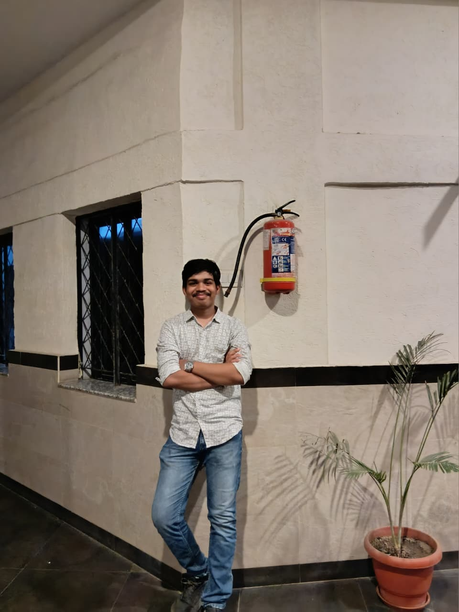

Expert Advice
Get guidance from agriculture experts.
To make farming smart, efficient, and sustainable using modern technology. We aim to help farmers increase productivity and reduce crop loss.

To provide easy solutions for crop diseases, guide farmers with proper steps, and improve farming results through digital support.
FarmAid helps farmers detect crop issues, improve yield, and get expert recommendations using modern technology.

Get guidance from agriculture experts.

Track crop health easily.

Smart farming suggestions.
Farmers Helped
Crop Solutions
Accuracy

Connect with experienced agriculture experts and get the right guidance for your farming problems.
Creator
Creator
Creator
Creator

Creator